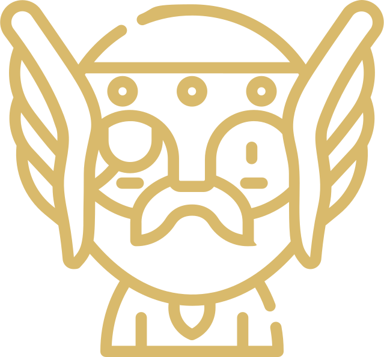
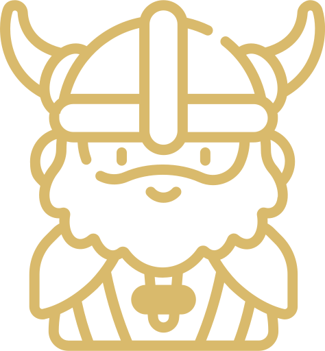
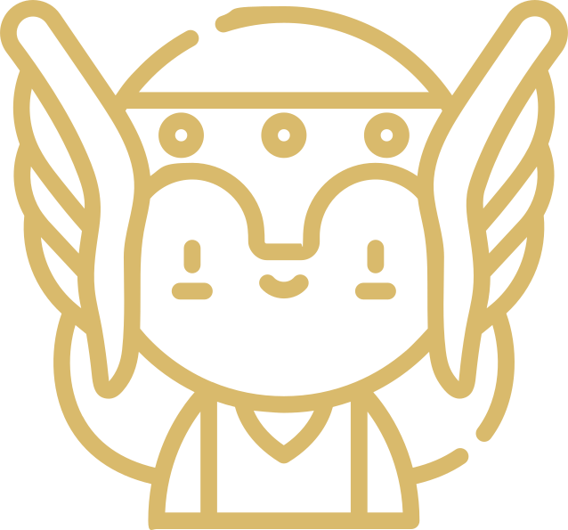
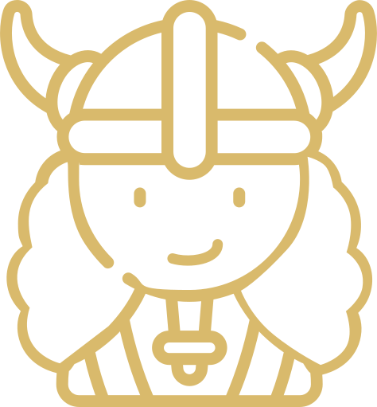
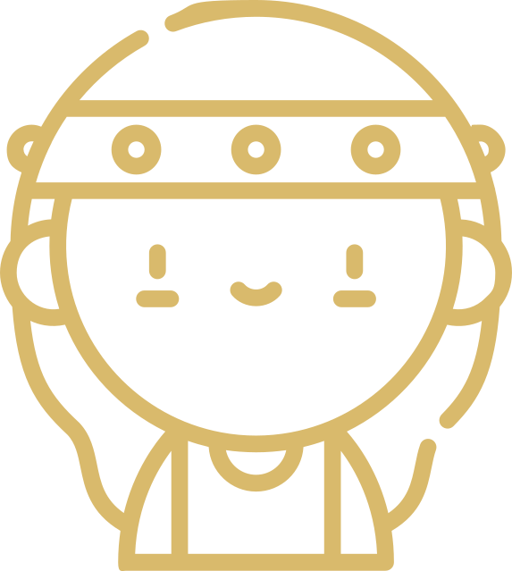
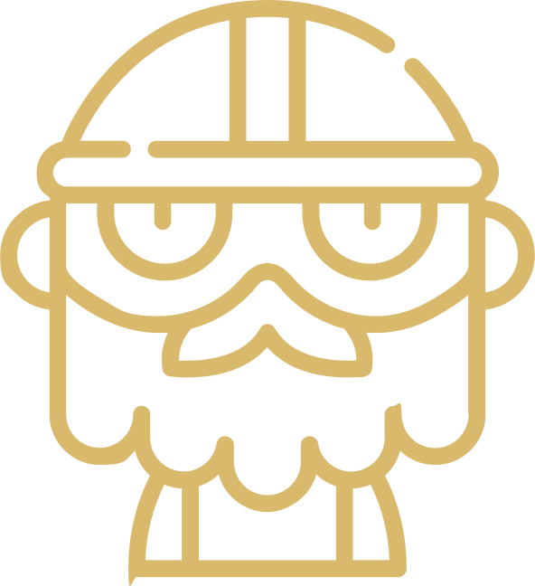
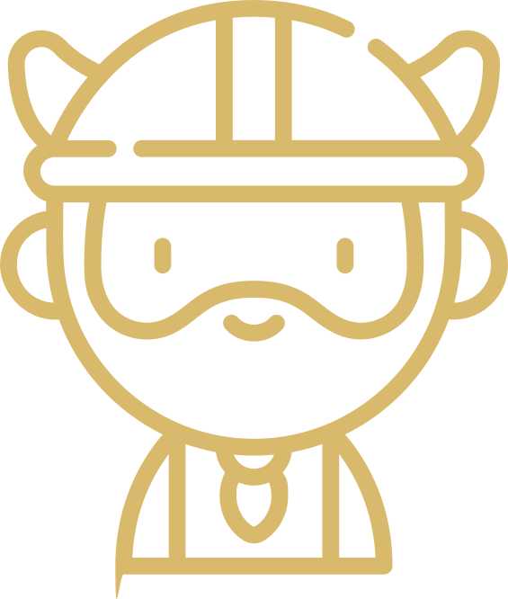

The Norse Gods & Goddesses
A Guide to Norse Gods and Goddesses
Before the beginning of time, there was Ginnungagap a bottomless abyss, which separated the icy land of Niflheim and the fiery land of Muspelheim. These two realms rose in power and clashed; the burning frost turned into water drops and the water drops turned into life.
The first living being was Ymir, a hermaphroditic giant who was created from those life-giving drops of water and whose death was brought about by Odin and his brothers. Odin, Vili, and Vä, Ymirá's descendants, fashioned the Nordic mythological universe from his blood, bones, flesh, teeth, hair, eyelashes, brains and skull.
The Norse gods belong to two major clans: Æsir and Vanir. Odin, Frigg, Thor, Loki, Balder, Hod, Heimdall and Tyr are the most elevated representatives of Æsir and are known as the main gods. The second clan, Vanir, contains the fertility gods and count Njord, Freyr, and Freyja as their most notable members. Despite the antagonism between them, it was necessary for the two families to combine their powers and ideals for all to prosper.
Odin
(from Old Norse: Odinn)
The supreme deity of Norse mythology and the greatest among the Norse gods was Odin, the Allfather of the Aesir. He was the awe inspiring ruler of Asgard, and most revered immortal, who was on an unrelenting quest for knowledge with his two ravens, two wolves and the Valkyries. He is the god of war and, being delightfully paradoxical, the god of poetry and magic. He is famous for sacrificing one of his eyes in order to be able to see the cosmos more clearly and his thirst for wisdom saw him hang from the World Tree, Yggdrasil, for nine days and nine nights until he was blessed with the knowledge of the runic alphabet. His unyielding nature granted him the opportunity to unlock numerous mysteries of the universe.
Thor
(from Old Norse:Pórr)
Thor was Odin's most widely-known son. He was the protector of humanity and the powerful god of thunder who wielded a hammer named Mjölnir. Among the Norse gods, he was known for his bravery, strength, healing powers and righteousness.
Loki
(Old Norse: loki)
Loki was a mischievous god who could shape-shift and can take up animalistic forms. He conceived a scheme to cause the death of Balder. Upon learning that mistletoe was the only thing that could hurt Balder, he placed a branch into the hands of the blind god, Hod, and tricked him into throwing it at Balder, killing him.
Frigg
(From Old High German Frija)
Odin's wife, Frigg, was a paragon of beauty, love, fertility and fate. She was the mighty queen of Asgard, a venerable Norse goddess, who was gifted with the power of divination, and yet, was surrounded by an air of secrecy. She was the only goddess allowed to sit next to her husband. Frigg was a very protective mother, so she took an oath from the elements, beasts, weapons and poisons, that they would not injure her brilliant and loving son, Balder. Her trust was betrayed by Loki, a most deceitful god.
Baldr
(Old Norse:baldz)
Frigg and Odin are the parents of Balder, who was described as living between heaven and earth. Balder was the epitome of radiance, beauty, kindness and fairness. He was believed to be immortal, but he was killed with mistletoe the golden bough that contained both his life and his death.
Freyja
(Old Norse for "the Lady")
Freya was one of the most sensual and passionate goddesses in Norse mythology. She is a goddess associated with war, death, love, sex, beauty, fertility, gold, and seiÃr. Freyja is the owner of the necklace Brísingamen, rides a chariot pulled by two cats, is accompanied by the boar Hildisvíni, and possesses a cloak of falcon feathers. By her husband Odr, she is the mother of two daughters, Hnoss and Gersemi. Along with her brother Freyr, her father Njördr, and her mother (Njördr's sister, unnamed in sources), she is a member of the Vanir.
Freyr
(Old Norse:'Lord')
Freyr was the god of fertility and one of the most respected gods for the Vanir clan. Freyr was a symbol of prosperity and pleasant weather conditions. He was frequently portrayed with a large phallus.
Heimdallr
(from Old Norse Heimdallr)
Heimdallr, known as the shiniest of all gods due to him having the whitest skin, was a son of Odin who sat atop the Bifrost (the rainbow bridge that connects Asgard, the world of the Aesir tribe of gods, with Midgard, the world of humanity) and remained forever on alert; guarding Asgard against attack.